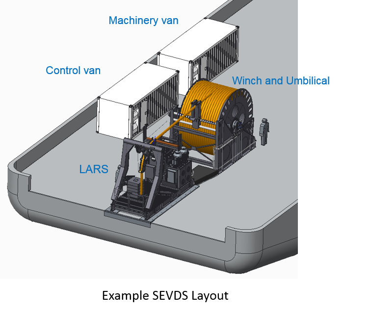

Submarine Emergency Ventilation & Decompression Systems (SEVDS)
OceanWorks International is a world leader in the design and manufacture of Submarine Emergency Ventilaiton & Decompression Systems (SEVDS). SEVDS are surface supplied umbilical systems that supply a disabled submarine (DISSUB) with fresh air with simultaneous controlled exhaust and in-situ decompression. The depth of operation for OceanWorks SEVDS systems is up to 600m.
The SEVDS can be used to stabilize the environment aboard the DISSUB. Ventilation provides extended life support while in-situ decompression reduces the physical risks and requirements associated with surface recompression and/or decompression after a free ascent or rescue. SEVDS are a key element of submarine rescue intervention for many Navies around the world.
Check out the Istanbul Shipyard's SEVDS in action in Turkey on behalf of the Turkish Navy - OceanWorks' submarine rescue systems provide a quick response and world wide capability for physical transfer of crew members from a submarine that is disabled and trapped on the sea floor. OceanWorks can supply a variety of system and component options for customers to choose from, including:
Submarine Receiver Fittings (SRF)
.jpg)
SRF's are permanent fittings installed on the submarine and connected to existing high/low salvage piping. The SRF design maintains the existing hull pressure boundary configuration. SRF configuration and operational features can be tailored to match different submarine piping interface configurations.
The main features of OceanWorks' SRF's are:
- Low profile mounting to submarine fairing/deck
- Spring loaded, pressure balanced air connection maintains dual hull
stop at all times during connection process for ultimate safety - Through hull internal hull stop valve actuator
- API RP17H interfaces for alignment and actuation
- ROV/ADS operated latch mechanism
- Design enables full end-to-end pressure test before valve opening
Submarine Adapter Units (SAU)

Submarine Adapter Units (SAU) are portable intermediate fittings designed to allow any SEVDS umbilical to be connected to the submarine by an ADS or ROV in addition to divers. The SAU umbilical connection is STANAG 1450 compatible allowing it to be used with any SEVDS with these fittings.
The main features of OceanWorks' SAU's are:
- Robust frame and handling for ROV interface
- NATO STANAG 1450 (draft) hose connection
- API RP 17H interfaces
- ISO 13628-8:2002 ROV actuators
- ROV/ADS operated latch with indicator
- Pressure test circuit for supply hose and submarine connection before hull stop opening
- Neutrally buoyant
- High visibility markings and indicators
SEVDS Surface Equipment

The SEVDS surface equipment includes all required equipment that allows the intervention team to connect the intervention vessel to connect and supply fresh air to the DISSUB.
The surface equipment includes:
- 6m ISO Control Van and Machinery Van containers with full gas analysis an management systems, high pressure compressors & gas storage
- DNV Certified with air transportable weight and dimensions
- A-Frame Deployment Skid with high speed constant tension down line winch, clump weight, system and Hydraulic Power Unit (HPU)
- Depth rating from 200 to 610 meters depending on requirements
- Custom configurations available to suit individual client requirement
For more information please contact: sales@oceanworks.com